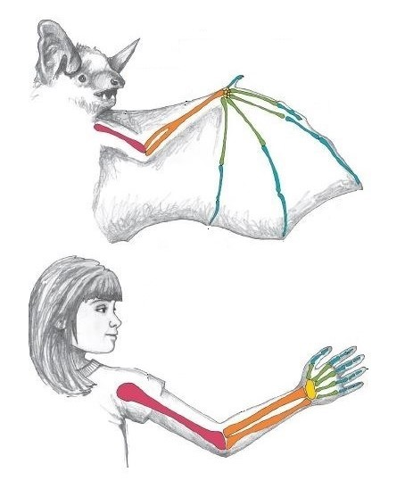
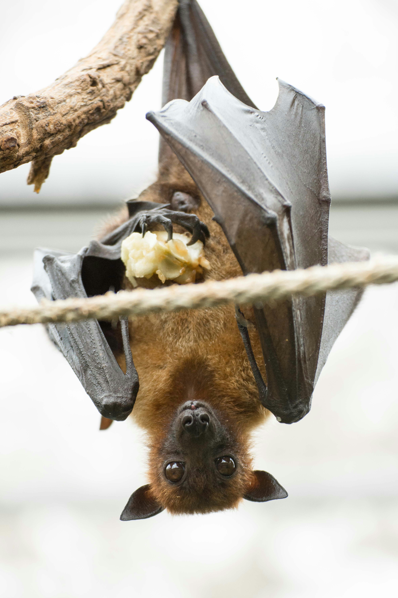
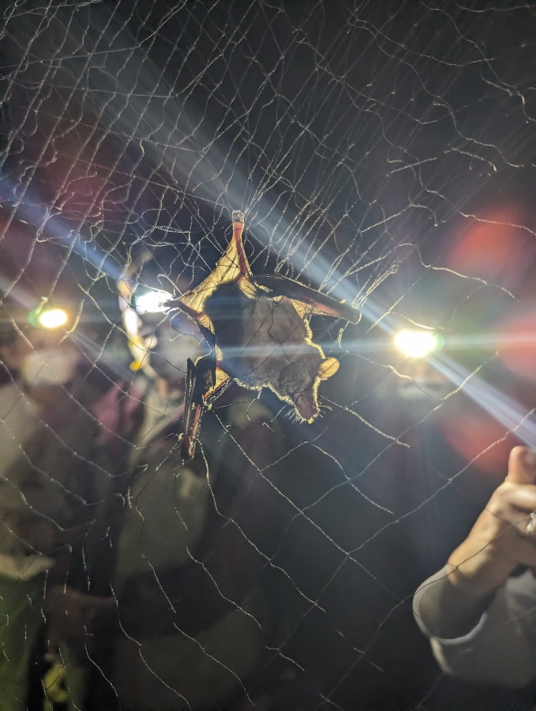
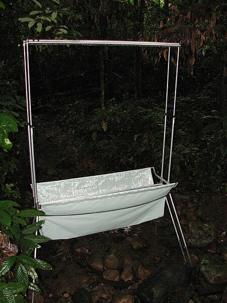

11 Bats
Infections
- Rabies
- Nipah
- Hendra
- Coronaviruses (MERS, SARS, COVID)
- Ebola
- Marburg
- Histoplasma capsulatum
11.1 Biology
Bats are the only mammals capable of true flight. Found on all continents with the exception of Antarctica, there are over 1400 species of bats worldwide. Bat species exhibit enormous diversity, ranging in size from 2g to nearly 1.5kg. Most bat species eat either insects, fruit, or nector.
Fun fact
In addition to being the only mammals that can truly fly, and the unique sensory adaptations for echolocation, bats have several remarkable features. They live longer life-spans (up to 40 years!) than other species of a similar size and have enormous metabolic rates during flight. Fascinatingly, they carry a wide-range of human transmissible viruses, but rarely are affected clinically themselves. The unique immune and metabolic features that allow them to tolerate viruses and have marked longevity is an area of active research.
11.2 Infectious diseases
11.2.1 Rabies
Rabies virus causes fatal neurological disease in all mammalian species. Transmitted through infectious saliva (generally through a bite from an infected animal), the virus is distributed in wildlife reservoirs globally. Approximately 59,000 humans die annually from rabies primarily in Africa and Asia; over 99% are attributable to bites from rabid dogs. Rabies is generally considered fatal with onset of clinical symptoms; the Milwaukee protocol can be attempted to rescue symptomatic humans but no treatment exists for animal species. Death generally occurs in most species within 10 days of clinical sign onset. Rabies is entirely vaccine preventable through vaccination; not only is pre-exposure vaccination effective, but due to the pathogenesis mechanism leading to a long (weeks to months) incubation period, post-exposure prophylaxis quickly after exposure is also effective in protecting against disease development. (REF WHO, 2018, Technical report)
Bats are a major wildlife reservoir for rabies in the Americas. Most human rabies cases in the United States are attributable to a bite from a rabid bat. Vampire bats in Central and South Americas are major transmitters of rabies, especially to livestock, because of their feeding habits: they bite their prey in order to lap up blood. (REF WHO, 2018, Technical report)
Fun fact
Bats generally tolerate most viruses without any clinical manifestations. Rabies is an exception - bats do get sick and die from rabies. However, though rabies is generally considered fatal, there are well-documented viral neutralizing antibodies in non-vaccinated bats, suggesting that some bats exposed to rabies will mount an immune response and survive. (REF Davis, 2012, 10.1089/vbz.2011.0674)
11.2.2 Nipah
Nipah virus is an emerging pathogen that can cause severe encephalitis with or without respiratory involvement and a reported fatality rate of up to 40-75%. Nipah virus was first recognized in Malaysia in 1998. The emergence of the virus demonstrates the complex interactions between people, animals, and the environment that characterizes One Health. Fruit trees planted in close proximity to pig farms attracted a fruit-eating bat species, “Flying Foxes,” the wildlife reservoir of Nipah. The leading belief about Nipah emergence is that fruit dropped by the Flying Foxes into the pig enclosures were subsequently eaten by the pigs accompanied with Nipah exposure and infection. Infectious pigs could then transmit to humans who came into contact causing an outbreak. There have been subsequent Nipah outbreaks in Bangladesh, associated with date palm sap contaminated with Flying Fox saliva during the collection process. (REF Daszak, 2012, 10.1073/pnas.1201243109)
11.2.3 Hendra
Hendra virus is an emerging pathogen that can cause a range of clinical signs in humans and in horses from mild influenza-like syndromes to fatal respiratory and neurlogical disease. Similar to Nipah virus, Flying fox are the reservoir species for Hendra. Horses can become infected through exposure to Flying Fox bodily fluids, such as saliva on partially eaten fruit dropped into pastures. Though outbreaks have been rare, forward transmission to other horses and humans have been reported. The disease was first diagnosed in 1994. (REF Field, 2001, 10.1016/S1286-4579(01)01384-3)

11.2.5 Hemorrhagic fevers caused by filoviruses
Filoviruses, the pathogen family responsible for both Ebolavirus and Marburgvirus, are considered to primarily circulate among fruit bat reservoirs. Spillover to primates, including humans, can cause serious hemorrhagic fever.
Ebola was first recognized in the 1970’s with several outbreaks occuring in the succeeding decades. Notably, in 2014, a large outbreak in West Africa was declared a Public Health emergency of International Concern by the WHO. More than 28,600 people were infected during the outbreak with a case mortality rate approaching 40%. The mortality of Ebolavirus without treatment reaches 90%. (REF Kalra, 2014, 10.4103/0974-777X.145247; CDC, 2024, Outbreak History)
Marburg virus disease presents clinically similar to Ebola with hemorrhagic fever and high case mortality (ranging from 24-88%). The disease was first recognized in Germany in the late 1960s. Rousettus bats are believed to be the main wildlife reservoir. (REF WHO, 2021, Factsheet)

11.2.6 Histoplasmosis
Histoplasma capsulatum is a fungal pathogen that is often transmitted to humans and companion animals through inhalation of bat guano. Clinical manifestations include fever and respiratory disease.
11.3 Study methods
11.3.1 Capture
- Mist nets
The most common method for capturing bats for wildlife studies is through mist nets. These nets are a very fine weave strung between two poles that is practically invisible to the eye and by echolocation. Used to capture both birds and bats, the animal flies into them and becomes entangled. The animals need to be promptly and expertly removed from the net in order to prevent - Other nets?
- Traps
- Hand capture


11.3.2 Recording
- audio capture
- camera trap